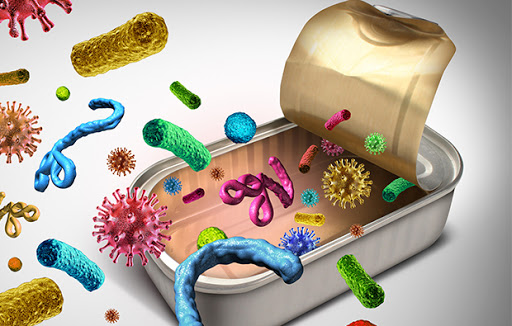

ENCICLPEDIA DE SALUD
Botulismo

El botulismo es una enfermedad rara pero seria causada por una toxina (veneno) producida por una bacteria llamada Clostridium botulinum. Esta toxina se encuentra naturalmente en la tierra.
Pincha aquí para ampliar la información